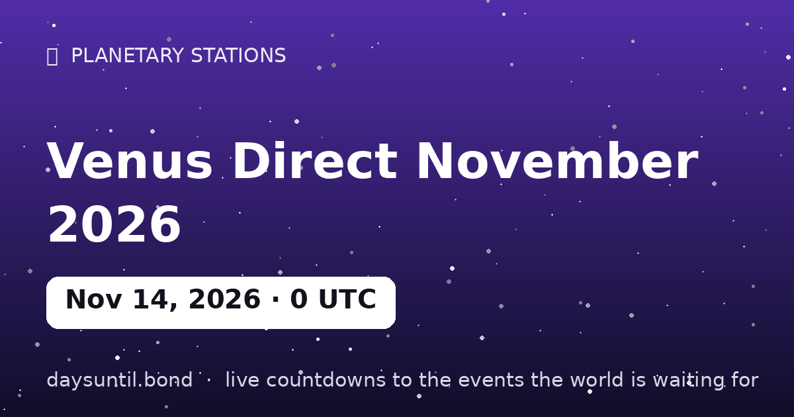

How Many Days Until Venus Direct November 2026?
Venus Direct November 2026 falls on Saturday, November 14, 2026.
As of October 24, 2026: 21 days to go — 3 weeks and 0 days, 15 weekdays (6 weekend days), about 504 hours.

Quick facts
| Station moment (UTC) | November 14, 2026 · 00:24 |
|---|---|
| Zodiac position | 22°51' Libra |
| Direction | Turning D |
| Duration of phase | ~6 weeks |
About Venus Direct November 2026
Venus stations direct on November 14, 2026 at 00:24 UTC, at 22°51' Libra — computed to the minute with our own Keplerian ephemeris.
Venus retrograde is the rare six-week audit of love, money and values — it comes only every 18 months. The station is the turning point itself: the day the planet's apparent motion reaches zero before reversing. In tradition, days around a station carry the event's themes most intensely — decisions made at a station are said to set the tone for the whole season that follows. Full guide with a free chart checker: the Venus retrograde guide on Prophetic.
Your Venus Direct November 2026 countdown milestones
It is easier to plan against fixed points than against a number that moves. These are the dates on which the countdown to Venus Direct November 2026 passes each marker between now and the day itself — the last one falls on Friday 13 November, when there will be 1 day left.
| Milestone | Day | Date | Remaining |
|---|---|---|---|
| 14 days | Saturday | 31 October 2026 | 14 days to go |
| 7 days | Saturday | 07 November 2026 | 7 days to go |
| 3 days | Wednesday | 11 November 2026 | 3 days to go |
| 1 days | Friday | 13 November 2026 | 1 day to go |
How the remaining time breaks down
21 days is the headline, but it is rarely the number that helps. 15 of those are weekdays and 6 fall on a weekend, which is the split that matters if you are planning around work. It is 3 weeks and 0 days, or roughly 0.7 months, or about 504 hours.
| Unit | Until Venus Direct November 2026 |
|---|---|
| Days | 21 |
| Weeks | 3 weeks and 0 days |
| Months (approx) | 0.7 |
| Weekdays | 15 |
| Weekend days | 6 |
| Hours | 504 |
| Sleeps | 21 |
Working days are Monday to Friday and do not subtract public holidays, which vary by country and employer — the full month-by-month split is on our weekday page for Venus Direct November 2026.